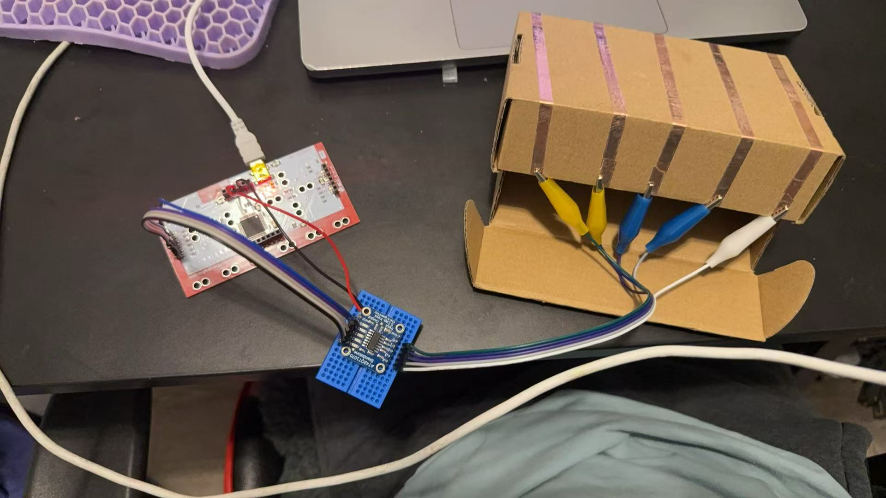

Module 3 Formstorming
Weekly Activity
Yiyang Zhang
Project 3
Module 3
Is the makey makey time!
Activity 2
Project 3
Final Project 3 Design
I learned that touch sensors are very sensitive to grounding. If the ground wasn’t stable, the touch wouldn’t work well. I also found that the shape and size of the copper foil changed how well the sensor responded. I had to test many versions to get it right. Also I used P5.js for the sound, but it had some delay. This made me think about using Web MIDI in the future. Balancing the tech with the creative design was hard but also fun. I enjoyed mixing physical parts with web interaction and learned a lot through trial and error.

Powered by w3.css